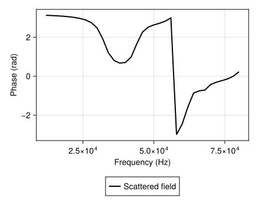

FEM and shell coupling
The FEM paths discretize acoustic or elastic differential equations and couple them to outgoing acoustic fields. Radial and meridian formulations are available. Full 3D volume FEM is not supported.
Radial acoustic FEM and DtN
Separating spherical harmonics gives a radial equation for degree l:
\[\frac{d}{dr}\left(r^2\frac{du_l}{dr}\right) +\left(k^2r^2-l(l+1)\right)u_l=0.\]
On the artificial outer sphere of radius R, an outgoing Hankel wave gives the exact Dirichlet-to-Neumann relation for each retained mode:
\[u_l'(R)= k\frac{{h_l^{(1)}}'(kR)}{h_l^{(1)}(kR)}u_l(R).\]
The finite-element weak form follows by multiplying by a test function and integrating by parts. Rigid/soft conditions apply at the body. Fluid transmission couples interior and exterior fields. This discretizes the same boundary-value problem as the sphere modal series.
Radial FEM supports linear/quadratic elements for applicable rigid/soft paths. Fluid and elastic variants have their own discretizations and controls. R > radius is required for an exterior annulus. Moving R farther away is not the main accuracy control when the modal DtN condition is exact. Check element refinement and modal cutoff separately.
Complex radial sphere results
solution = fem(Sphere(a), Rigid(), k; method = :radial)
scattering_amplitude(solution) # complex meters
target_strength(solution) # dB re 1 m²For Sphere with Rigid, PressureRelease, FluidFilled, SolidElastic or supported Shelled boundaries, radial FEM supports both calls above, returning backscatter without observation keywords. The result retains radial coefficients and pressure fields: exterior scattered pressure and, for a fluid interior, interior total pressure, normalized to unit incident pressure. Their complex phase follows the time convention in Conventions. Fluid shells retain total pressure profiles. Elastic solids and shells retain longitudinal and shear displacement potentials. Their respective fluid interiors retain regular pressure coefficients. The elastic potentials are scaled by rho_ext * omega^2 / p_inc and are dimensionless, rather than displacements in meters.
Elastic shells support fluid interiors. interior_coupling=:identical_fluid uses the exterior fluid's properties in the cavity. The default :generalized uses the specified interior properties. Fluid shells support fluid or vacuum interiors. These layered paths use n_elements for the shell mesh and do not support adaptive=true.
Frequency sweeps retain these complex amplitudes for phase plotting:
using AcousticScattering
using CairoMakie: plot, save
boundary = Shelled(ElasticLayer(2.7, 4.0, 2.0), FluidInterior(1.0, 1.0), 0.8)
spectrum = frequency_sweep(
k -> fem(Sphere(0.01), boundary, k; n_elements=640),
12000.0:2000.0:80000.0, 1500.0)
figure = plot(spectrum; quantity=:phase)
Adaptive refinement uses successive target-strength changes in dB. Check complex-amplitude refinement separately when phase matters. A small magnitude change alone does not bound phase error. See Numerical convergence. Cylinder radial and meridian FEM results retain target strength only.
For supported radial spheres, pressure(solution, points) samples complex acoustic pressure normalized to the incident amplitude. It accepts one Cartesian point or an array of points, including fluid shells and fluid cavities. See Pressure at Cartesian points for field selection, coordinates and interface limits. field=:shell samples a fluid wall while field=:interior samples its fluid cavity. Elastic material has no acoustic pressure field. Elastic stress/displacement evaluation and radial sphere surface-field plotting are unavailable.
Meridian acoustic FEM
Meridian FEM discretizes radial/axial dependence and uses azimuthal Fourier modes. For mode m, cylindrical-coordinate operators contain the term -m^2 / rho^2. Regularity on the axis and the transformed volume weighting are essential. Meridian FEM supports spheres, straight cylinders, and spheroids.
Increase mesh resolution and angular/modal orders separately. Oblique cylinder/spheroid incidence requires the corresponding Fourier content. These methods do not model bend curvature.
Elastic and coupled shell FEM
Isotropic solid displacement satisfies
\[\nabla\cdot\boldsymbol\sigma+ \rho_s\omega^2\boldsymbol u=0, \qquad \boldsymbol\sigma=\lambda\operatorname{tr}(\boldsymbol\epsilon)\boldsymbol I +2\mu\boldsymbol\epsilon.\]
Normal displacement and traction couple to fluid pressure. Coupled shell implementations combine structural finite elements with exterior and, where supported, interior boundary elements.
Geometry and material parameters
Shell(body, thickness) uses the base body's outer dimensions. For a sphere of radius $R$, the inner radius is $R - thickness$. For a prolate spheroid with outer semi-axes $a > b$, the inner surface is confocal:
\[b_i=b-h,\qquad a_i=\sqrt{a^2-b^2+b_i^2},\qquad h=\text{thickness}.\]
Thus, $h$ is the equatorial thickness of a spheroidal shell. Its normal thickness varies along the meridian. Require $0 < h < b$. A confocal shell does not have constant normal thickness, and the distinction matters for elongated shapes.
The structural material takes Poisson's ratio $\nu$, mass density $\rho_s$ in kg/m³, and Young's modulus $E$ in Pa. The corresponding isotropic constants are
\[\mu=\frac{E}{2(1+\nu)},\qquad \lambda=\frac{E\nu}{(1+\nu)(1-2\nu)}.\]
These are elastic moduli, not viscosities. Structural shell FEM uses real elastic material parameters/ it does not include constitutive damping. Acoustic radiation still carries energy away from the shell.
Fluid–solid interface conditions
With the time convention $e^{-i\omega t}$, let $\boldsymbol n_s$ point out of the solid on each face. It points into the exterior fluid on the outer face and into the cavity on the inner face. Pressure exerts inward traction, while fluid acceleration matches the normal solid displacement:
\[\boldsymbol\sigma\boldsymbol n_s=-p\boldsymbol n_s, \qquad \frac{\partial p}{\partial n_s}=\rho_f\omega^2 \boldsymbol u\cdot\boldsymbol n_s.\]
The exterior pressure is the sum of incident and scattered pressure where the cavity has no incident source. Tangential traction is zero on both faces because the fluids are inviscid. When the cavity boundary integral uses the normal pointing out of the cavity, that normal is the negative of the solid's inner-face normal. Its displacement coupling therefore has the opposite sign.
The elastic weak form, with a complex-conjugated test displacement $\boldsymbol v$, is
\[\int_{\Omega_s}\boldsymbol\epsilon(\boldsymbol v)^*: \mathsf C:\boldsymbol\epsilon(\boldsymbol u)\,dV -\omega^2\int_{\Omega_s}\rho_s\boldsymbol v^*\cdot\boldsymbol u\,dV =-\int_{\partial\Omega_s}p\boldsymbol v^*\cdot\boldsymbol n_s\,dS.\]
This gives the structural dynamic stiffness $K-\omega^2M$ and pressure loads on both faces. See Yan (2017), equations (8)–(10) for coupled FEM/BEM equations, with normal orientations accounted for explicitly.
General shell and oblique incidence
:general resolves the elastic volume through the thickness. Displacement and acoustic pressure are expanded in azimuthal modes $e^{im\phi}$. In cylindrical coordinates $(x,r,\phi)$, the strain components for one mode are
\[\begin{aligned} \epsilon_{xx}&=\partial_x u_x,& \epsilon_{rr}&=\partial_r u_r,& \epsilon_{\phi\phi}&=(u_r+im u_\phi)/r,\\ 2\epsilon_{xr}&=\partial_r u_x+\partial_x u_r,& 2\epsilon_{x\phi}&=\partial_x u_\phi+im u_x/r,& 2\epsilon_{r\phi}&=\partial_r u_\phi-u_\phi/r+im u_r/r. \end{aligned}\]
Meridian integrals carry the volume weight $2\pi r$. At m = 0, circumferential motion decouples from the pressure-driven response. Oblique incidence excites nonzero modes, so m_max must be increased independently of the spatial resolution.
The incident direction has polar angle incidence_angle and azimuth zero. Without observation keywords, scattering_amplitude(solution) evaluates backscatter. Explicit angle and azimuth are observation directions in body coordinates. The result is a complex far-field amplitude in meters, with target_strength(solution) = 20log10(abs(amplitude)) in dB re 1 m².
Thin-shell approximation
:thin uses the axisymmetric part of Hayek and Boisvert's shell theory. It includes membrane strain, bending, shear deformation, and rotatory inertia. If $l$ is the midsurface half-length, its frequency and thickness parameters are
\[c_p=\sqrt{\frac{E}{\rho_s(1-\nu^2)}},\qquad \Omega=\frac{\omega l}{c_p},\qquad \varepsilon=\frac{h^2}{12l^2}.\]
The three displacement variables are meridional motion, normal motion, and meridional rotation. Tangential displacement and rotation vanish at the poles and normal displacement remains bounded. The outward normal load is cavity pressure minus total exterior pressure. Axial incidence is required because this reduction retains only m = 0.
The paper's equations assume constant normal thickness. Applying a single equatorial thickness to the confocal geometry is a further approximation. Thinness must be assessed against local curvature radii as well as body length. An elongated spheroid can have high curvature near its tips even when h/a is small. Use the volume formulation when thickness variation or radial stress is important. A thin-shell response need not approach the full elastic solution uniformly near narrow resonances.
Usage and convergence
For example:
body = Shell(Spheroid(0.05, 0.02), 0.001) # thickness in m
material = Shelled(0.3, 7800.0, 2e11) # Poisson ratio, kg/m³, Pa
solution = fem(body, material, 1026.8, 1477.4, 1000.0, 1480.0, 100.0;
method = :thin, incidence_angle = 0.0)
strength = target_strength(solution)This expensive structural example is illustrative and is not executed in the ordinary docs build. The four fluid arguments are exterior density/speed followed by interior density/speed. The final positional input is exterior wavenumber.
:thin supports prolate spheroids and a vacuum cavity with zero interior density. :general supports spheres and prolate spheroids and requires a positive interior density. A small positive density approximates a vacuum since the general method has no exact vacuum branch.
Check these controls separately:
n_eta: meridional resolution of the structure and acoustic surfaces.n_t: number of through-thickness node layers for:general, at least two.m_max: azimuthal truncation for oblique incidence in:general.pole_offset: excluded interval at each polar tip in $\eta=\cos\theta$ coordinates. Reduce it together with meridional refinement to assess the omitted tips.rtol: acoustic boundary-integral quadrature tolerance.
Compare complex amplitude, including phase, under refinement. Near elastic or cavity resonances, both meridional and thickness resolution can move the response substantially. Reducing quadrature tolerance alone does not resolve a coarse structural mesh. The coupled acoustic formulation has no irregular-frequency stabilization, so convergence of a single linear solve does not establish accuracy at every frequency.
Solve diagnostics
diagnostics(solution).systems reports residuals and numerical controls for each angular mode, radial basis problem or coupled shell system. Summary residuals and matrix dimensions are maxima over the individual systems. The direct solvers report no iterative convergence flag (converged = iterations = nothing). A small matrix residual does not establish spatial resolution, modal convergence or accuracy of the physical model.
Adaptive radial FEM retains all refinement solves and reports refinement.converged, the last change_db, the requested target_tol, and the final n_elements. change_db is nothing if the budget permits no refinement. Agreement between successive target strengths is a refinement check. Compare against an independent reference when assessing absolute accuracy or resonance location.